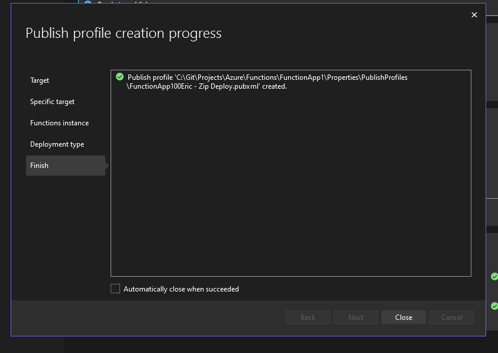

https://www.youtube.com/watch?v=NhhmLt0YGqY
This section of the Azure Function creation wizard in Visual Studio lets you define key technical details for your new function:
- Functions worker: You select the specific .NET runtime and hosting model for your function. In your image, it shows ".NET Framework Isolated v4", which means your function will run on .NET Framework using the more flexible "isolated worker model."
- Function trigger: You choose how your function will be activated. The image shows "Http trigger", meaning the function will run in response to an HTTP request (like visiting a web address or sending data to it). Other common triggers include timers, queue messages, or database changes.
Here's a simple explanation of common Azure Function triggers:
- HTTP Trigger: The function runs when it receives an HTTP request (e.g., from a web browser, a mobile app, or another API call).
- Timer Trigger: The function runs on a schedule you define (e.g., every 5 minutes, once a day at midnight).
- Blob Trigger: The function runs when a new or updated file (blob) is added to a specific storage container.
- Queue Trigger: The function runs when a new message is added to a storage queue.
- Event Hub Trigger: The function runs when new events are ingested into an Azure Event Hub (often used for data streaming).
- Cosmos DB Trigger: The function runs in response to changes in an Azure Cosmos DB database.
- Service Bus Queue/Topic Trigger: The function runs when a message is added to an Azure Service Bus Queue or Topic.
- Use Azurite for runtime storage account: This checkbox (which is checked in your image) allows you to use Azurite, a local emulator for Azure Storage. This is extremely useful for development, as it lets your function interact with storage services (like queues or blobs) on your local machine without needing a live Azure Storage account, speeding up testing.
- Authorization level: You set the security level for accessing your function. The image shows "Function", which means callers will need a function-specific key to access it. Other options might include "Anonymous" (no key needed) or "Admin" (master key needed).
In essence, this wizard step is where you specify the core technology, activation method, local development setup, and security for your new Azure Function.
Authorization level anonymous means that anyone can run this
Azure Function Deployment Options in Visual Studio
This "Publish" wizard in Visual Studio presents you with choices for hosting your Azure Function application in the cloud. You're essentially deciding the underlying infrastructure that will run your code.
- Azure Function App
- Description: "Publish your application code to a serverless compute that scales dynamically and runs code on-demand."
- Simple Explanation: This is the most common and traditional way to deploy an Azure Function. You just give Azure your function's code, and Azure handles all the servers, scaling, and maintenance automatically. Your code runs only when it's triggered (e.g., by an HTTP request, a timer, a new file in storage), and you only pay for the compute time your code actually uses. It's the quintessential "serverless" experience.
- When to choose this: For most Azure Functions, especially when you want the simplicity, automatic scaling, and cost-efficiency of a true serverless model.
- Azure Function App Container
- Description: "Publish your application as a Docker image to Azure Container Registry and run it on Azure Function App."
- Simple Explanation: With this option, you first package your entire function application into a Docker container image. Then, you tell Azure Functions to run that container instead of just your raw code. This gives you more control over the environment your function runs in, as you define all the dependencies and configurations within your Dockerfile. Azure Functions still manages the scaling of these containers for you.
- When to choose this: When you need more control over the function's runtime environment, have specific dependencies that are easier to manage in a container, or want to ensure consistency between local development (using Docker) and cloud deployment. This is often used with the "isolated worker model" for .NET functions.
- Azure Container Registry
- Description: "Publish your application as a Docker image to Azure Container Registry."
- Simple Explanation: This option doesn't directly deploy your function to run. Instead, it's a step in a containerized deployment workflow. Azure Container Registry (ACR) is a private, managed Docker registry in Azure. Think of it as a private online library where you store your Docker images. When you select this, you're simply uploading your function's Docker image to this registry. You would then typically use another Azure service (like Azure Kubernetes Service, Azure Container Apps, or even Azure Function App Container as described above) to pull and run that image.
- When to choose this: When you want to store your Docker images in a private, secure, and managed registry within Azure. This is a prerequisite for using "Azure Function App Container" if your image isn't already in ACR, or if you plan to deploy your containerized function to other container orchestration services.
In summary, the wizard guides you from the most hands-off serverless deployment (Azure Function App) to more container-centric approaches that offer greater environmental control (Azure Function App Container) or simply image storage (Azure Container Registry).
When publishing to azure function app:
I see existing azure functions:
Now i ned to create a new azure function , although i can also select an existing azure function
Than azure function app name : FunctionApp100Eric

Now i see it on the portal
Summary of Azure Function Publish Profile Details
This screen in Visual Studio provides a snapshot of your Azure Function App's publishing configuration, showing what's about to be deployed and where.
- Publish Profile Name:
- At the very top, you see FunctionApp100Eric - Zip Deploy.pubxml. This is the name of the specific publish profile you've created or are currently using. Zip Deploy.pubxml indicates that it's configured to deploy your function as a ZIP package.
- Status:
- Ready to publish. This simple message confirms that the current configuration is valid and your application is prepared for deployment to Azure.
- Settings:
- This indicates that your code will be compiled in "Release" mode. In software development, "Release" builds are optimized for performance and size, and typically strip out debugging information, making them suitable for production environments.
- Target Runtime: linux-x64
- This specifies the operating system and architecture where your Azure Function App will run in the cloud. In this case, it's set to Linux (64-bit), which is a common and often cost-effective choice for hosting Azure Functions.
- Hosting:
- This section details the Azure subscription and resources where your Function App will be hosted.
- Account: eric-cabrera@LIVE.com (Microsoft account)
- This shows the Microsoft account that is authenticated and being used to deploy the Function App.
- Subscription: f6ab9759-ffe4-4b77-81f6-e55987b84565
- This is the unique identifier (GUID) of your Azure subscription. All your Azure resources are billed and organized under a specific subscription.
- Resource group: AzureAIServicerg
- A resource group is a logical container that holds related Azure resources for an application. This helps you manage, monitor, and delete all the resources for a solution together. Here, it's named AzureAIServicerg, suggesting it might contain resources related to AI services.
- Resource name: FunctionApp100Eric
- This is the specific name of your Azure Function App resource that will be created or updated in Azure. This name must be globally unique across Azure.
- Site: https://functionapp100eric.azurewebsites.net
- This is the public URL where your deployed Azure Function App will be accessible once it's published. The .azurewebsites.net domain is standard for Azure App Services and Functions.
- Service Dependencies:
- This section lists other Azure services that your Function App relies on and their connection status. Visual Studio helps manage these connections.
- Azure Application Insights: DynatraceWebApp
- Description: Application Insights is an Azure service for monitoring the performance and usage of live applications. DynatraceWebApp is likely the name of the Application Insights resource.
- Connection setting name: APPLICATIONINSIGHTS_CONNECTION_STRING
- This is the name of the application setting (environment variable) within your Function App that holds the connection string to Application Insights, allowing your function to send telemetry data.
- Indicates that the connection to this dependency is properly configured.
- Azure Storage: freefunctionsstorage
- Description: Azure Storage is a highly scalable and secure cloud storage service. Azure Functions requires a storage account for its internal operations (like managing triggers, logging, and state). freefunctionsstorage is the name of this storage account.
- Connection setting name: AzureWebJobsStorage
- This is the standard application setting name used by Azure Functions to connect to its required storage account.
- Indicates that the connection to this essential storage dependency is properly configured.
In summary, this publish profile screen provides all the critical information about how your FunctionApp100Eric will be compiled, where it will live in Azure (account, subscription, resource group, public URL), and what other Azure services it needs to connect to in order to run correctly.
What Happens After a Successful Azure Function Publish
When you successfully publish your Azure Function App from Visual Studio, a series of automated steps occur on the Azure server to get your code up and running:
- Code Compilation and Packaging:
- Visual Studio first compiles your C# code into a deployable package (often a ZIP file, as indicated by Zip Deploy.pubxml in your publish profile). This package contains your compiled code, dependencies, and necessary configuration files.
- Deployment to Azure:
- The compiled package is then securely uploaded to your designated Azure Function App resource (FunctionApp100Eric) in your Azure subscription. Azure uses a deployment engine (like Kudu for App Services/Functions) to handle this.
- Extraction and Setup:
- On the Azure server (which is a managed environment, so you don't directly interact with the operating system), the ZIP package is extracted into the Function App's file system.
- The Azure Functions runtime then loads your code. It reads your host.json and local.settings.json (which are transformed into application settings on Azure) to understand how your functions should behave, what triggers they respond to, and what connections they need (like to AzureWebJobsStorage and Application Insights).
- Runtime Initialization:
- The Function App's runtime environment (in your case, Linux-x64 with .NET Framework Isolated v4) starts up.
- Your individual functions (like Function1.cs and any others you've defined) are registered with the runtime, making them ready to be triggered.
- Dependency Connections:
- The Function App uses the connection strings (e.g., APPLICATIONINSIGHTS_CONNECTION_STRING, AzureWebJobsStorage) that were either part of your deployment or configured as Application Settings in the Azure portal, to establish connections to its required services like Application Insights and Azure Storage.
Can you see your code on the server?
Yes, but not in the same way you see it on your local machine. You won't get direct SSH or RDP access to the underlying server operating system for a consumption-plan Azure Function. However, you can view and manage your deployed code and its environment through the Azure portal:
- Go to the Azure Portal:
- Open your web browser and navigate to https://portal.azure.com.
- Log in with the same Microsoft account you used for publishing (eric-cabrera@LIVE.com).
- Navigate to Your Function App:
- In the Azure portal search bar, type FunctionApp100Eric (or navigate to your AzureAIServicerg resource group).
- Click on your Function App named FunctionApp100Eric.
- Explore Your Deployed Code and Settings:
- Functions: In the left-hand menu of your Function App, click on "Functions". You should see a list of your deployed functions (e.g., Function1). Clicking on a function will show you its details, including its URL and options to test it.
- App Files (Advanced): For a more direct view of the deployed files, in the left-hand menu, under "Development Tools," look for "Advanced Tools" (Kudu). Clicking this will open a new tab. In Kudu, you can go to Debug console > CMD or Bash and navigate to site/wwwroot to see the actual files that were deployed. This is where your compiled code and other deployment artifacts reside.
- Configuration: Under "Settings," click on "Configuration". Here you'll see the Application Settings (environment variables) that were set during deployment, including your connection strings.
- Monitor: Under "Monitoring," click on "Application Insights" (if configured). This will take you to the Application Insights resource where you can see logs, performance metrics, and invocation details for your functions.
In essence, your code is now running securely and scalably in the Azure cloud, and the Azure portal provides all the tools you need to monitor, manage, and even inspect the deployed application.
I see the function1 by clicking the overview tab
When i click on the function on the portal i see

Here are the tbs explanation
Azure Function Portal: Function1 Details Explained
This screen provides a comprehensive interface for interacting with a single function within your Azure Function App.
Top Right Section: Get Function URL
This section is dedicated to providing you with the URLs needed to trigger your HTTP-triggered function.
- _master (Host key): This URL includes the master key for your Function App. This key grants administrative access to all functions within the app. It's highly sensitive and should be used with extreme caution and never exposed publicly.
- default (Function key): This URL includes a function-specific key. This key grants access only to this particular Function1. It's more secure than the master key for general use.
- default (Host key): This URL includes a host-level key that grants access to all functions within the Function App, but is different from the _master key.
Main Content Area Tabs:
These tabs allow you to perform different actions and view various aspects of your Function1.
- Code + Test (Currently Selected)
- Purpose: This is where you can view your function's configuration (like functions.metadata shown in the screenshot) and test its execution directly from the portal.
- Details:
- functions.metadata: The JSON content displayed here is the metadata for your function. It defines its name, script file, entry point, language, and crucially, its bindings. In your screenshot, it shows an httpTrigger binding ("type": "httpTrigger", "direction": "in", "authLevel": "Anonymous", "methods": ["get", "post"]), indicating it's an HTTP-triggered function that accepts GET and POST requests with no authentication required.
- Test/Run button: This button allows you to manually trigger the function from the portal, providing input parameters and viewing the output and logs directly.
- Logs window at the bottom: This pane displays real-time logs from your function's executions when you test it using the Test/Run button, or if you have Application Insights configured.
- Integration
- Purpose: This tab provides a visual designer to configure your function's inputs and outputs (bindings) and connect it to other Azure services.
- Details: You can graphically add new triggers (how the function starts) and output bindings (where the function sends data), such as connecting to Azure Storage Queues, Cosmos DB, Event Hubs, etc. This is a powerful visual tool for building complex serverless workflows.
- r
Function Keys
- Purpose: This tab allows you to manage the API keys that control access to your function.
- Details: You can view existing function keys, create new ones, or revoke old ones for enhanced security. This is where the default (Function key) from the top-right section is managed.
- Invocations
- Purpose: This tab provides a historical view of your function's executions.
- Details: You can see a list of past invocations, their status (success/failure), and details about each run, which helps in debugging and understanding function behavior over time. This data is typically pulled from Application Insights.
- Metrics
- Purpose: This tab displays various performance and usage metrics for your function.
- Details: You can view charts and graphs for metrics like function execution count, execution duration, error rates, and resource consumption. This is essential for monitoring the health and performance of your function in production.
Other Buttons and Links on the Code + Test Tab:
- Discard: Discards any unsaved changes you've made in the code editor (though for Isolated Worker functions, direct editing here is limited).
- Refresh: Refreshes the view, useful if you've made external changes or want to see the latest logs.
- Get Function URL link: This is the same as the section at the top right, providing quick access to the function's invocation URLs.
- Disable: Temporarily disables the function, preventing it from being triggered.
- Upload: Allows you to upload new function code (e.g., a ZIP package) directly.
- Delete: Permanently deletes the function.
- Resource (JSON): Shows the underlying Azure Resource Manager (ARM) JSON definition for your function, useful for automation and understanding resource properties.
- Send us your feedback: A link to provide feedback to Microsoft.
The warning "Editing .NET isolated Function Apps is not supported in the Azure portal. Use your local development environment to edit this Function App." is crucial. It means that while you can view metadata and test, you cannot directly modify the C# code of your isolated worker model function within the portal's editor. You must make code changes in Visual Studio (or your local IDE) and then republish.
We can also test the function on the portal